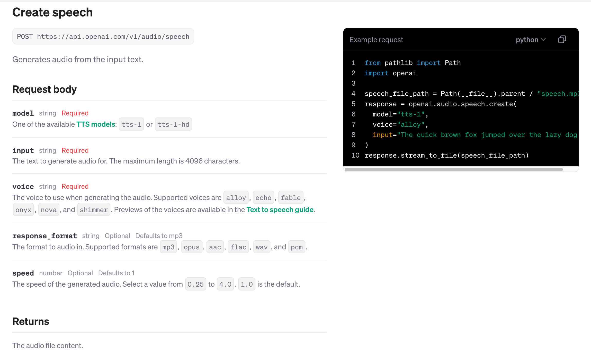
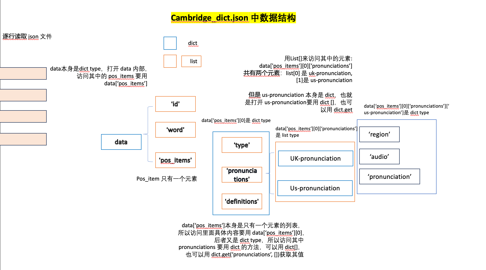
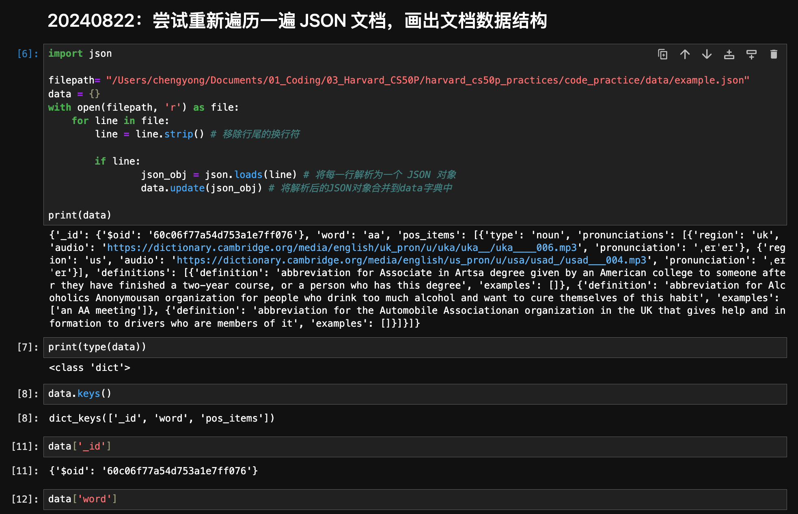
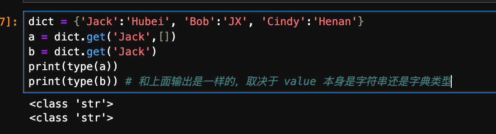

Python笔记
来自于《自学是门手艺》
一、关于如何读技能书¶
心理建设¶
1、从买一本书的时候，自学技能的开始，就懂得，这本书是要不止读一遍的
第一遍就是囫囵吞枣的读
拿来一本书开始自学技能的时候，他会先翻翻目录（Table Of Contents），看看其中有没有自己完全没有接触过的概念；然后再翻翻术语表（Glossary），看看是否可以尽量理解；而后会看看索引（Index），根据页码提示，直接翻到相关页面进一步查找…… 在通读书籍之前，还会看看书后的参考文献（References），看看此书都引用了哪些大牛的书籍，弄不好会顺手多买几本。
2、为了习得新技能去阅读，就要施展 “只字不差地阅读” 这项专门的技能。所以第二遍、第三遍就要只字不差的阅读了。
3、在阅读的过程中，要反复做归纳整理，为的就是记住知识点
准备一个小本子，很重要。
我之后自学 Python，也在印象笔记建立一个 Python 自学日记。
4、不管怎么样，先用起来，后面慢慢修正
5、尊重前人的总结和建议。
6、多参考Python官方文档：https://docs.python.org/3/
其中对初学者最重要的两个链接是：
- Tutorial: https://docs.python.org/3/tutorial/index.html
- Library Reference: https://docs.python.org/3/library/index.html
以后遇到不懂的，第一查询对象应该是Python Tutorial，而不是百度、谷歌等浏览引擎。
可以用 site:python.org
谷歌的搜索秘籍，多参考：
7、提前建立预算观念很重要
很多人学Python半途而废，往往就是希望能够在半个月内掌握所有的Python知识，这是不太可能的，揠苗助长。所以学Python过程中，我要有足够的耐心。每天编程，100天后再说。
期间还要不断地重复，看Python Tutorial，不断地去看以前的笔记，归纳总结。
一切“主要靠时间”的活动都一样，都需要在从事之前认真做“心理建设”，通常情况下，读一本教程，上一个培训班就会了——这几乎是错觉。
首先要明白，这肯定是个比“天真的想象”要长的多的过程。
其次要明白，并且要越来越自然地明白，哪儿哪儿都需要很多重复。读，要读很多遍；练，要练很多遍，做要做很多遍。
8、刻意练习
譬如先在纸上把程序写下来，明天去买一个本子，专门写Python程序，自己在脑子里执行，看是否会报错，之后转到电脑上编辑器运行。
关闭Pycharm的自动补全功能，老老实实打出代码的每一个字母。
（二）一些有用的工具和课程¶
1、用 VS Code 作为主要的编程工具，这样同时可以在一个文件夹写C 语言和 Python 代码，实现同样的功能，就像 CS50x 第六课讲得那样，这种方式很不错。
2、VS Code 一些快捷键：
- 将 C 程序和 Python 代码并行查看，首先两个程序都打开，然后可以拖住 Python 窗口往右边移动。
- 注意C 程序要运行，用 make xxx命令(假设 C 代码文件名称是 xxx.c)，而不是右上角的 run code 功能；运行 Python 程序可以用命令行 python xx.py，也可以用右上角的 run code 功能。
- 批量加行注释：选中多行后，按快捷键Option+ Shift +K ，批量取消注释：Option + Shift + -。
- 若需要查看 C 语言关于任何函数的注释，可以在 terminal 中输入 man 3 keyword，譬如说man 3 printf，可以用来查看 printf的用法。或者参考官网cpp reference
3、在线 debugger 工具，可以 vusialize 可视化Python、C、JavaScript 每一步执行的过程。
https://pythontutor.com/
（三）Python、C、Scratch 的对比，包括实现同一个功能，在不同编程语言的实现的区别 参考 c code 文件夹
| C (以下每一句末尾都要加;) |
Python | |
|---|---|---|
| type conversion /casting | (float) 3; (float)x / y; |
Float(3) |
| 打印 | printf("%s", "Hello world.\n"); 不同字符串用不同的标志符 %i, %s,%c,%f，参考 printf()函数 |
print("Hello world.",end ="\n" ) print(f"Hello, {name}", name), |
| string comparison | if(strcmp(s, "+") == 0){ } C 语言中不能直接进行字符串判断，两个相同字符串也无法直接用 == 比较。 |
if (s = "+"): |
二、做些项目，干中学¶
1、批量查询单词的美式发音¶
（1）第一阶段实现：word，查询单词，并批量写回 csv
目前结合 POE 的 prompt 完成了。
（2）任务：即同时提取出word、prounciation和对应的例句（如果有的话）
举一反三：同样的程序我可以做变通，譬如把对应的例句也提取出来，这样可以提升自己对 POE 得来的程序的理解，只有举一反三，这项目中锻炼出来的能力才是自己的。
2、批量 tts，利用 openai¶
这里有个值得注意的点，一定要阅读官方文档API Reference Audio- Create speech ，其实文本转语音tts是可以控制语音速度(speed)的。如果只看[tts doc]https://platform.openai.com/docs/guides/text-to-speech中的例句，是没有的。这就是阅读所有相关文档的好处。
注意：右边的 example request，可以选择 curl 还是 Python 语言

3、利用批量查询的单词，结合Openai prompt，生成2个例句，然后用 tts 文本转语音。¶
注意阅读 Assisstant API
4、将 conversation 中的 Alloy 和 Nova，分别用不同语音生成，最后合并在一起。¶
结合 Prompt 生成的，这个还要再学习学习
必备知识：把 python pydub 库好好看看，有哪些 method
| Text Only | |
|---|---|
1 | |
| Text Only | |
|---|---|
1 2 3 4 5 6 7 8 9 10 11 12 13 14 15 16 17 18 19 20 21 22 23 24 25 26 27 28 29 30 31 32 33 34 35 36 37 38 39 40 41 42 43 44 45 46 47 48 49 50 51 | |
5、读取 json
必备知识：把 python json 文档好好看看
三、总结：一些常用的小片段¶
1、输入密码等时候，需要设定一定的规范。¶
| Text Only | |
|---|---|
1 2 3 4 5 6 7 | |
之后学了正则表达式，就可以像现在很多网站注册时对密码的要求一样，可以要求密码长度不低于 6，必须至少有 1 个数字，1 个字母和 1 个特殊符号（?!@）。
2、For 循环可以和列表结合¶
之前要打印列表list 的各个元素：
| Text Only | |
|---|---|
1 2 | |
现在还有更简单的：
| Text Only | |
|---|---|
1 2 | |
3、对大型 JSON 文件、TXT 文件读取的心得¶
首先是搞清楚其中的数据结构，通常长这样。

方法就是通过各种打印，一级一级的输出 dict.keys()。

以下是编程序时候注意事项：
读取的时候，记得一行一行读取，用 for line in file:
其次记得，容易出现 index out of range，这里可能是因为在上面几个级别结构中，可能有的 key 没有 value，所以要嵌套好几层，在赋值之前，检查是否存在 value，如果是 dict 对象，可以用 dict.get('key1',[])来获取对应的 value1，然后再用 if 语句判断是否存在，存在再赋值。

三、框架¶
1、根除来自大脑里根深蒂固的观念：以为只有理科生、工科生才能编程，文科生就是天生不能编程。
不是这样的，文理分科是中国教育的特殊分类方式，挺害人的。
2、写代码这事刚开始学起来好像门槛挺高，但是这只不过是个幻觉，到最后还是得靠思考能力。你能写出多优秀的代码，还是得靠写代码的人本身。
写代码本身就是像认识字一样基本的技能，属于信息时代每个人要掌握的技能。
1、概念与定义
Definition:
Each programming language has a set of primitive constructs, a syntax, a static semantics, and a semantics.
| 类比 | English | Python |
|---|---|---|
| primitive constructs | words | literals and infix operators |
| syntax | describes which strings of words constitute well-formed sentences |
which strings of characters and symbols are well formed. |
| static semantics | defines which sentences are meaningful | defines which syntactically valid stringshave a meaning. |
| semantics | defines the meaning of those sentences. | associates a meaning with each syntactically correct string of symbols that has no static semantic errors. |
来自 Introduction to Computation and Programming P30
Errors 类型：
Syntax errors 与 static sementic errors：前一种很容易识别，编程软件帮你做了，后一种bug 更为隐蔽。
其他的概念：
- declarative knowledge
- imperative knowledge
- Church-Turing thesis
- halting problem
- Turing completeness
以下概念来自李笑来《自学是门手艺》
不管是Python、C语言、Java、C++、R等语言，所有编程语言的基本概念无非是以下这些：
- 数据：整数、布尔值；操作符；变量、赋值；表达式
- 函数、子程序、参数、返回值、调用
- 流程控制、分支、循环
- 算法、优化
- 程序：语句、注释、语句块
- 输入、处理、输出
- 解释器
几乎所有的编程入门教学书籍结构都差不多是由这些概念构成的。
1、数据¶
（1）数字 Nubmers¶
数字类型：Int float char
①数字操作符
加：+
减： -
乘 *
除 /
取余%
幂**
②逻辑操作符：数字
== 判断两个值是否相当
!= 判断两个值是否不当
>大于
< 小于
>= 大于等于
<= 小于等于
in 属于关系，这个是Python中比较特殊的
（2）布尔值¶
Python中，布尔值是True 或者False，任何逻辑表达式的结果，都会是其中之一
①布尔运算操作符
| Python | |
|---|---|
1 2 3 4 5 6 | |
(True and Flase) Yield: False
(True 0r Flase) Yield: True
(True and True ) Yield: True
(True 0r True ) Yield: True
(False and False ) Yield: False
(False 0r False ) Yield: False
2、流程控制¶
（1）if语句
if 语句，选择性执行
| Python | |
|---|---|
1 2 3 4 5 6 7 | |
其中r 是变量
r = random.randrange(1, 1000)，就是赋值语句
（2）循环执行：
① for 循环
| Python | |
|---|---|
1 2 3 | |
if 语句与for 语句的嵌套执行：
| Python | |
|---|---|
1 2 3 4 5 6 7 8 9 | |
以上就是一套算法，不过是算法就可以优化，算法体现的是程序员的思维方式。
3、函数¶
函数是一个完整的程序，核心构成就是输入、处理、输出：
输入：能接收外部通过参数传递的值
处理：内部有能够完成某一特定任务的代码，尤其是可以根据“输入”得到“输出”
输出：能向外部输送返回值。
被调用的函数，也可以被理解为子程序（sub-Program），主程序执行到函数调用时，就开始执行实现函数的哪些代码，然后再返回主程序。
| Python | |
|---|---|
1 2 3 4 5 6 7 8 9 10 11 12 13 14 15 16 | |
4、其他¶
（1）注释
Python中单行用 #
多行用三个单引号
| Python | |
|---|---|
1 2 3 4 5 6 | |
四、Python类型及其运算¶
https://docs.python.org/3/library/stdtypes.html
在编程语言中，总是包含最基本的三种数据类型：
- Boolean Types，即布尔值，包括 True False
- Numeric Types，即数字类型，包括整数(int)、浮点数(float)、复数(Complex Numbers)
- Sequence Types，即序列类型，包括 列表(list)，元组(Tuple)，数列(Range)，字符串(String)
- Set Types，即集合类型
- Mapping Types，即字典，更为复杂，但更符合现代世界的认知
- 其他，包括Modules，Classes，Functions，Methods 也是一种 Type
查看 Python 中的 Type属性用 type()函数
| Python | |
|---|---|
1 2 3 4 5 6 7 8 9 | |
几乎所有的 Type 都支持：真假判别(Truth Testing)和 比较（comparison)
Truth Testing
以下为 False，除此之外，基本都是 True
- 整数：
Noneandfalse - zero of any numeric type:
0,0.0,0j,Decimal(0),Fraction(0, 1) - empty sequences and collections:
'',(),[],{},set(),range(0)
| Text Only | |
|---|---|
1 2 3 4 5 6 7 8 | |
Comparison：只不过每种 Type 的 Comparison 细则不同
（一）Boolean Types¶
1、定义：
- True
- False
bool是 int的子集, 经常用 1 表示 True，0 表示 False
2、Boolean Operations
or
and
Not
操作的优先级：not > and > or
当数值计算操作符、逻辑操作符、布尔操作符一起出现时：
数值计算操作符最高，其次是逻辑操作符，最后是布尔操作符
以下面代码为例
| Python | |
|---|---|
1 2 | |
第一步，先计算(n+1) % 2 等于0
第二步，然后 n<0 逻辑操作符，得到True； 0==0逻辑运算符等于True
第三步，布尔操作符 True and True，返回True
（二）数字 Numeric Types¶
（1）定义
分为整型 int和浮点型float、复数 complex，Python中没有Long长整型
（2）数字计算的操作符：
| Operation | Result | Notes |
|---|---|---|
| x + y | 加法 | |
| x- y | 减法 | |
| x * y | 乘法 | |
| x / y | 除法 | |
| x // y | 取整 | 如17//5 取整数就是3. |
| x % y | 取余 | 如 17%5，返回 2. |
| x ** y | 幂 | 等同于 power(x, y) |
| Abs(x) | 取绝对值 | |
| int(x) | 转换为整数 | |
| Float(x) | 转换为浮点数 | |
| Complex(re, im) | 构造复数 | |
| Divmond(x, y) | 返回数组(x//y, x %y) |
注操作符的优先级
对两个值进行操作的+、-的优先级最低；
稍高的是*、/、//、%
更高的是对单个值进行操作的+、-
优先级最高的是**
当打印字符串时，需要引用数字，这时候将数字转换为字符，可以用str(numer)
后面《字典》一章会学到，如果将字符转换为数字，用int(str)
| Python | |
|---|---|
1 2 3 4 | |
一个有意思的地方：
当用Python解释器作为计算器使用时，可以用"_"作为局部变量引用（来自Python tutorial），示例如下：
| Python | |
|---|---|
1 2 | |
（2）数值的比较，数值之间可以使用逻辑操作符，如：
2>3 返回False
2<3 返回 True
>=
<=
== 等于
!= 不等于
（三）Text Sequence——Str¶
字符串中的元素和元组一样，是不可更改的，要更改，只能通过切片和拼接实现。
string 和 tuple 比较像，可以被concatenated, indexed, and sliced.
（1）字符串与码值的转换
将单个字符转换成码值，ord()；
反过来把码值转换成字符，chr()
| Python | |
|---|---|
1 2 | |
（2）字符串表示
加引号即可，既可以用单引号，也可以用双引号
| Python | |
|---|---|
1 2 3 4 5 6 7 8 | |
（3）字符串与数值之间的转换
字符串转换为整数 int(), 转换成浮点型float()
将数值转换成字符串类型str()
input()函数一般输入的是字符，因此如果让你输入一个数字，你来比较，可能就需要涉及到数据类型转换。
转义字符：
用处：譬如在双引号中，要用到单引号，且单引号要打印出来。
| Python | |
|---|---|
1 2 | |
\t 代表制表符, \n 代表换行符
（4）字符串操作符：和列表、元组一样
- 拼接：+和' '（空格） //真是没想到 空格也可以起到连接符的作用
- 拷贝：*
- 比较操作符： <、<=、>、>=、==、!=
- 成员关系操作符：in 、not in
| Python | |
|---|---|
1 2 3 4 5 6 7 8 9 10 11 | |
拼接字符串
| Python | |
|---|---|
1 2 3 4 | |
字符之间、字符串之间也可以用逻辑运算符比较，因为字符对应着Unicode码
A~Z 分别对应着65~90
a~z 分别对应着97~122
字符串之间的比较，是从第一个字符开始进行逐个比较，“一旦决定胜负马上停止”
(5) 字符串索引
字符串有专门的切片函数s()
| Python | |
|---|---|
1 2 3 | |
s[2:5]，指第二个到第四个字符，不包含第五个
| Python | |
|---|---|
1 2 3 4 5 6 | |
（6）处理字符串的内建函数
把字符串当做处理对象的有：ord()、input()、int()、float()、len()、print()
ord('a') 返回Unicode数字 97，相对的函数就是chr(97)
int()，把字符串数字转换为整数
float()，把字符串数字转换为浮点数
len()，返回字符串的字符个数
（7）字符串处理的method
字符串对象，有系统内部的函数，对其进行处理，称为类的方法。
以下是使用字符串的方式：
①str .title()，str.upper() , str.lower()
| Python | |
|---|---|
1 2 3 4 5 6 7 8 9 | |
②str.count()
| Python | |
|---|---|
1 2 | |
③str.find() , sth.rfind(), sth. index() , rindex()
④replace()
④字符串中空白
实际上Python会识别出字符串中的空白，就像上面例子中一样
strip()可处理字符串首位的空白，制表符、换行付
| Python | |
|---|---|
1 2 3 4 5 6 7 | |
判断元素是否在字符串中，返回True or False，用In描述
| Python | |
|---|---|
1 2 | |
⑤字符串拆分
s.splitlines() #返回的是个列表，由被拆分的每一行作为其中的元素。
| Python | |
|---|---|
1 2 3 4 5 6 7 | |
注意.splitlines()和.splitline()，实际上后者没有相应函数，写的时候不要忘了用复数
还有readlines()和readline()，有区别
Writelines()和writeline()，有区别
⑥合并字符串
和split()相反，join(iterable)方法用于拼接字符串
| Python | |
|---|---|
1 2 3 4 5 6 7 8 9 | |
join()的参数支持一切可迭代对象，如列表、元组、字典、文件、集合或者生成器等。
Python程序员更喜欢用Join()方法代替加好来拼接字符串。
⑦ 字符串的格式化
format()方法接收位置参数和关键字参数，即待转化的参数
| Python | |
|---|---|
1 2 3 4 5 6 7 8 9 10 11 12 13 14 15 | |
⑧字符串独享的操作符%
%c: 格式化字符及其ASCII码
%s: 格式化字符串
%d: 格式化整数
%o: 格式化无符号八进制数
%x：格式化无符号十六进制数
%X: 格式化无符号十六进制数（大写）
%f: 格式化浮点数字，可指定小数点后的精度
%e: 科学计数法格式化浮点数
| Python | |
|---|---|
1 2 3 4 5 6 7 8 9 10 | |
格式化操作符辅助命令：
| m.n | m显示的是最小总宽度，n是小数点后的位数 |
|---|---|
| - | 结果左对齐 |
| + | 在正数前面显示加号（+) |
| # | 在八进制数前面显示'0o', 在十六进制数前面显示'0x' 或'0X' |
| 0 | 显示的数字前面填充'0'代替空格 |
| Python | |
|---|---|
1 2 3 4 5 6 7 8 9 10 11 12 13 | |
总结：字符串的连接目前有三种方法
- 简单字符串连接，用加号（+）
- 复杂的，尤其是有格式化需求是，使用格式化操作符（%）进行格式化连接，如：
result = "result is %s:%d" % (name, score)
- 当有大量字符串拼接，尤其发生在循环体内部时，使用字符串的join()方法无疑是最棒的，例如 result = "".join(iterator)
（四）Sequence Types: list, tuple, range¶
数据容器的范围广泛，其中包括字符串、由 range() 函数生成的等差数列、列表（List）、元组（Tuple）、集合（Set）、字典（Dictionary）。
总结：
| string | list | Tuple | range | Set | Dict | |
|---|---|---|---|---|---|---|
| Representation | 'Python' "Python" |
['ann', 'Bob'] | ('ann','Bob') | range(10) | {'ann':6575, 'bob':8982} | |
| Mutability | No | Yes | No | No | Set mutable Frozen set immutable |
Yes |
| Operator | index slice iteration |
index slice iteration |
||||
| Method | ||||||
1、Common Sequence Operations¶
列表、元组、字符串之间的共同点：
- 都可以通过索引得到每一个元素；
- 默认索引值总是从0开始
- 可以通过切片的方法得到一个范围内的元素的集合
- 有很多共同的操作符（重复操作符、拼接操作符、成员关系操作符）
列表、元组、字符串共同的method：适用于 mutable 和 immutable types
| Operation | Result | Notes |
|---|---|---|
| x in s | 判断 s 中是否存在 x 元素 | |
| s + t | 拼接 | |
| s * n | 元素复制 n 次 | n is interger, s is a sequence |
| s[i] | 从左往右，返回第 i 的元素，注意 0 是第一个 | |
| s[i:j] | 返回切片，从 第 i 到第 j 个元素 | |
| s[i:j:k] | 返回切片，从 第 i 到第 j 个元素，步长为 k | |
| Len(s) | 返回 s 的元素个数 | |
| min(s) | s 中最小的元素 | |
| max(s) | s 中最大的元素 | |
| s.index(x[,i[,j]]) | 在 s 中 x 第一次出现的序号（在包括 i 在内的序号 i 和 j 之间，如有定义） | |
| s.count(x) | s中 x 元素出现的次数 |
此外，同种 sequence 可以进行比较。
In particular, tuples and lists are compared lexicographically by comparing corresponding elements. This means that to compare equal, every element must compare equal and the two sequences must be of the same type and have the same length.
以下 operation 只适用于 mutable types：
| Operation | Result | Notes |
|---|---|---|
| s[i] = x | 对 s 的第 i 个元素赋值 x | |
| s[i: j] = t | slice of s from i to j is replaced by the contents of the iterable t | t 的数量要与切片元素数量一样，后面看看能否批量赋同一个值 |
| del s[i:j] | same as s[i:j] = [] |
|
| s[i:j:k] = t | the elements of s[i:j:k] are replaced by those of t |
|
| del s[i:j:k] | removes the elements of s[i:j:k] from the list |
|
| s.append(x) | appends x to the end of the sequence (same as s[len(s):len(s)] = [x]) |
|
| s.clear() | removes all items from s (same as del s[:]) |
|
| s.copy() | creates a shallow copy of s (same as s[:]) |
|
s.extend(t)ors += t |
extends s with the contents of t (for the most part the same as s[len(s):len(s)] = t) |
|
| s *= n | updates s with its contents repeated n times | |
s.insert(i, x) |
inserts x into s at the index given by i (same as s[i:i] = [x]) |
|
s.pop()ors.pop(i) |
retrieves the item at i and also removes it from s | |
| s.remove(x) | remove the first item from s where s[i] is equal to x |
|
| s.reverse() | reverses the items of s in place |
2、列表 （list），可变有序容器¶
① 表示
Python中提供了一个容器的概念，用于储存批量的数据。
字符串也是容器的一种。
列表（List）也是一种容器，注意列表和字典的区别。
列表可以存放不同类型的数据，
| Python | |
|---|---|
1 | |
创建列表，可以先定义一个空的列表，然后逐一添加
| Python | |
|---|---|
1 2 3 4 | |
列表的表示方式：用方括号[ ]表示
| Python | |
|---|---|
1 2 3 4 5 6 7 8 9 10 11 12 | |
②列表的操作符
列表的操作符合字符串相同：
- 拼接：+ （和字符串不一样的是，字符串可以用 空格表示拼接，列表就不可以了）
- 拷贝：*
- 逻辑运算：in 、not in；以及 <、<=、>、>=、==、!=
但通常情况下，没有对列表进行大小比较的需求。
in 和not in操作符
in 和not in只能判断一个层次的成员关系，譬如下面的就无法识别7 和9的存在
a = [3, 5, [7, 9], 11, 13]
③列表切片，根据索引提取列表元素
列表切片不会改变列表自身的组成结构和数据，它其实是为列表创建一个新的拷贝（副本）并返回。
| Python | |
|---|---|
1 2 3 4 5 6 7 8 9 10 11 12 | |
列表可以根据索引来删对应的一个值
字符串无法根据索引来删对应的值
切片还有更高阶的玩法，即第三个参数，为步长
④列表的内建函数BIF
len(a) #返回列表中元素个数
max(a) #返回列表中最大的元素
min(a) #返回列表中最小的元素
| Python | |
|---|---|
1 2 3 4 5 6 7 | |
⑤列表的Method
| Python | |
|---|---|
1 2 3 4 5 6 7 8 9 10 | |
可变序列还有一系列可用的 Methods：a.append()，a.clear()，a.copy()，a.extend(t)，a.insert(i，x)，a.pop([i])，a.remove(x)，a.reverse()……
不论列表中的元素全是数字也好，全是字符串也好，都可以用到排序
sort()
| Python | |
|---|---|
1 2 3 4 5 6 7 8 | |
列表的增：list.append()
append()不是一个BIF函数，而是列表的一个方法；
append一次只支持添加一个元素
| Python | |
|---|---|
1 2 3 | |
同时增加多个元素：list.extend()
实际上是以列表的形式增加的
| Python | |
|---|---|
1 2 | |
指定索引位置插入元素：list.insert(i, x)
| Python | |
|---|---|
1 2 3 4 | |
删除指定的值：remove()
如果列表没有这个值会报错
| Python | |
|---|---|
1 2 | |
删除指定索引的数：list.pop(i)
| Python | |
|---|---|
1 2 3 4 5 6 7 | |
有一个命令、两个 Methods 与删除单个元素相关联，del，a.pop([i])，a.remove(x)，请注意它们之间的区别。
list.choice方法实现随机抽取一个列表中元素的功能
| Python | |
|---|---|
1 2 3 | |
3、元组 Tuple，不可变有序容器¶
string 和 tuple 比较像：
- immutable
- can be concatenated
- can be indexed
- can be sliced
列表和元组不同的地方：
List是可变有序容器，Tuple是不可变有序容器，也称元组是元素上了锁的列表，只能读取，不能修改或删除其中的元素。此外，字符串中的元素也不可更改
首先是使用场景，在将来需要更改的时候，创建 List ；在将来不需要更改的时候，创建 Tuple。其次，从计算机的角度来看，Tuple 相对于 List 占用更小的内存。
拼接操作符（+），重复操作符（元组名*3)，关系操作符，逻辑操作符，成员关系符（in 和not in）可以直接应用在元组上，与列表是一样的。
①创建tuple
List用中括号标识，Tuple用小括号标识
a = (2, ) #只有单个元素时，一定要带上括号
或者不带括号，a = 2, 也可以创建元组，但最好带上括号
| Python | |
|---|---|
1 2 3 | |
②访问元组
与列表中的切片类似，但索引要用中括号括起来
复制元组，也可以使用切片实现
| Python | |
|---|---|
1 2 3 | |
③添加元素
不可删除元素，但可以追加元素
| Python | |
|---|---|
1 | |
④更新元组
元组本身元素不可修改，但通过切片+赋值可以间接实现元组的更新。
| Python | |
|---|---|
1 2 3 | |
4、range¶
All of the operations on tuples are also available for ranges, except for concatenation and repitition.
（五）集合（set），无序，不包含重复元素¶
集合又分为两种：
-
Set，可变的；
-
Frozen Set，不可变的。
集合用花括号括起来（回顾，列表用大括号括起来，元组用小括号），注意字典也是用大括号创建，只不过dict内部的元素表示方式与集合不同。
列表中可存储数字、字符串等不同类型的数据
元组只能存储元组（要么都是数字，要么都是字符串）
①集合的创建
b= set()
可以把列表 、元组、序列都转换为集合，使用set函数即可，转换之后，同时也对元素去重。
| Python | |
|---|---|
1 2 3 4 5 6 7 8 9 10 11 12 13 14 15 16 | |
②集合的操作
len()、max()、min()
in操作
| Python | |
|---|---|
1 2 3 4 5 6 7 8 9 10 11 12 13 | |
删除元素 set.remove(）
| Python | |
|---|---|
1 2 3 4 5 6 7 8 9 | |
集合运算：
- 并集： I，用method就是 set_1.union(set_2)
- 交集：&, 用method就是 set_1.intersection(set_2)
- 差集： - ,用method就是 set_1.difference(set_2)
- 对称差集：^ , 用method就是symmetric_difference(set_2)
| Python | |
|---|---|
1 2 3 4 5 6 7 8 9 10 11 12 13 14 15 16 17 | |
③集合的逻辑运算
以下均返回True and False
==
!=
isdisjoint(set_2)
issubset(set_2)
set < other
issuperset(set_2)
set_1 >= set_2
④更新
| Python | |
|---|---|
1 2 3 4 5 6 7 8 9 10 11 | |
（六）Mapping Types: dict¶
字典里的每个元素，由两部分构成，key和value，二者由一个冒号连接。
| Python | |
|---|---|
1 2 | |
①增
| Python | |
|---|---|
1 2 3 4 5 | |
②改
| Python | |
|---|---|
1 2 3 4 5 6 7 | |
③删
| Python | |
|---|---|
1 2 3 4 5 | |
④内建函数
len(phonebook)
max(phonebook)
min(xx)
sorted(phonebook)
sorted(phonebook, reverse = True)
迭代容器中元素
| Python | |
|---|---|
1 2 3 | |
dict 有 get()方法，list 列表没有。
参考：https://stackoverflow.com/questions/5125619/why-doesnt-list-have-safe-get-method-like-dictionary
5、Iterator Types :list, range, tuple, str, sets, dict¶
① 数列
②列表
| Python | |
|---|---|
1 2 3 4 5 6 7 | |
③字符串
| Text Only | |
|---|---|
1 2 3 4 5 6 7 8 9 10 | |
迭代同时，获取字母索引
| Python | |
|---|---|
1 2 3 4 5 6 7 8 9 10 | |
④元组
| Python | |
|---|---|
1 2 3 4 5 6 7 | |
⑤字典
| Python | |
|---|---|
1 2 3 | |
总结：以下统称为容器
| Text Only | |
|---|---|
1 2 3 4 5 | |
6、文件¶
open(file, mode = 'r')
mode的参数字符如下

读取文件名称，并打印，注意这里的斜杠要换成右斜杠|'/'，Windows的文件目录是左斜杠“\"，
| Python | |
|---|---|
1 2 3 | |
练习：从37万英文单词中，找出 一些按照同样的计算方式能得到 100 的单词，并且还是那种一看就是 “反例” 的单词。
五、if 语句与for循环、While循环¶
两种语句：分支和循环，循环又包括for 循环和while循环
1、if 语句¶
（1）if语句的构成
注意：
expression，后面紧跟冒号
statements要空两格
if 和else要是同等缩进
| Python | |
|---|---|
1 2 3 4 5 6 7 8 | |
多个分支就用elif处理
| Python | |
|---|---|
1 2 3 4 5 6 7 8 | |
2、for 循环¶
Python语言中，for循环不使用其它语言中那样的计数器，而是用range（）,替代计数器
譬如，用C语言写循环是这样：
| C | |
|---|---|
1 2 3 | |
用python写同样的东西，是这样的：
| Python | |
|---|---|
1 2 | |
（1）range()函数 等差列表函数
range(10) ，指[0 ,1,2,3,4,5,6,7,8,9]
等同于range(0, 10)
不过要让上述数组完全显示出来，需要用到list()
| Python | |
|---|---|
1 2 3 4 5 6 | |
range函数还可以指定步长
| Python | |
|---|---|
1 2 | |
（2）Continue、Break 和Pass
continue 语句将忽略其后的语句开始下次循环，而break语句将从此结束当前循环（也不会再有下次循环，实际上跳出了循环），执行循环之后的语句。
特别的体验一下没有break和有break的区别
| Python | |
|---|---|
1 2 3 4 5 6 7 8 9 | |
该种情况下，print(n)属于语句块for n in range(2, 100)，也就是2~99全部都会输出一遍
| Python | |
|---|---|
1 2 3 4 5 6 7 8 | |
这种情况下，print(n)属于语句 for i in range(2, n)，每碰到一个质数，都会打印一遍，譬如5，那么2,3,4，都满足 n % i !=0，那么5会打印3次。
只打印一次 的做法是：
| Python | |
|---|---|
1 2 3 4 5 6 7 8 9 | |
（2）另外一个用于理解break和continue语句区别的例子
| Python | |
|---|---|
1 2 3 4 5 | |
| Python | |
|---|---|
1 2 3 4 5 | |
（3）for 与else语句的组合
for循环以及接下来的while循环语句的后面也可以加上一个else语句，else语句只在循环完成后执行。
如果循环中间使用break语句跳出循环，那么else里边的内容就不会被执行了。
语法如下：
for 变量 in 可迭代对象:
循环体
else:
条件不成立时执行的内容
例子1：求闰年
| Python | |
|---|---|
1 2 3 4 5 | |
例子2：求20以内的质数
| Python | |
|---|---|
1 2 3 4 5 6 7 8 9 | |
例子3：求最大公约数
| Python | |
|---|---|
1 2 3 4 5 6 7 8 9 10 11 12 | |
3、while 循环¶
今天，绝大多数编程语言中，都提供两种循环结构：
Collection-controlled loops，以集合为基础的循环，Python中指for in循环
Condition-controlled loops, 以条件为基础的循环，Python中指while循环
for适合处理序列类型的数据的迭代，比如处理字符串（字典）中每一个字符
while更灵活，因为它后面只需要接上一个逻辑表达式即可。
六、函数¶
关于最简单函数该怎么写，注意冒号不要忘了，注意缩进。
| Python | |
|---|---|
1 2 3 4 | |
其中username是一个形参，而字符串'Jack'是实参，实参是调用函数时传递给函数的信息。
1、Print¶
print的官方功能：
print(*object, sep=' ', end='\n', file=sys.stdout, flush=False)
其中print()函数默认 在单词间以空格键作为两个单词之间相隔的占位符，默认结尾自动换行
| Python | |
|---|---|
1 2 3 4 | |
2、位置参数和关键字参数¶
向函数传递实参的方式由很多，可以使用位置实参，也可以用关键字实参
位置参数：positional arguments ，要求实参的顺序与形参的顺序相同；
关键字参数：keyword arguments ，每个实参都由变量名和值组成；
2.1 Positional Arguments¶
调用位置实参的例子如下，这里第一个实参'dog'对应形参animal_type，第二个实参‘Lion’对应形参pet_name。
| Python | |
|---|---|
1 2 3 4 5 6 7 8 9 10 11 12 | |
位置实参的缺点是，如果调用函数时，把 'dog' 和 'Lion' 互换，那么相应的返回值会很weird。而关键字实参调用，就不存在顺序的问题。
| Text Only | |
|---|---|
1 2 3 4 5 6 | |
2.2 Keyword Arguments¶
| Text Only | |
|---|---|
1 2 3 4 | |
2.3 二者混合：positional or keyword arguments¶
| Text Only | |
|---|---|
1 2 3 4 5 6 7 8 9 | |
| Text Only | |
|---|---|
1 2 3 4 5 | |
在函数内部，是把 names 作为容器处理的，不论是list、 string、range、tuple还是dictionary
2.3
总结：以下统称为容器
| Text Only | |
|---|---|
1 2 3 4 5 | |
七、类¶
列表 是数据层面的封装；
函数是语句层面的封装；
而对象是数据和代码都封装在了一起。
Python中的对象，包含特征和行为两部分，前者称为”属性“，后者称为”方法“
1、类的命名
①首字母要大写，不用下划线，譬如ElectricCar而不是Elctric_Car；模块(electric_car.py)和实例（instance，根据类创建的一个具象的事物）都用小写字母和下划线。
②每个类第二行都要有文档字符串，方便使用者知道这个类是干什么的
③import模块中的多个类的时候，不要一下子导入所有类，你可以先导入整个模块，之后再用module_name.Class.行为()来调用某个具体类
2、编写类
在每个类编写的时候要有方法__init__(），其中必须要有形象参数self，放在其他形参前面
类里面包含属性和方法，以car汽车为例
属性：汽车的名字、型号、寿命
方法：描述汽车的型号（一个动作）
| Python | |
|---|---|
1 2 3 4 5 6 7 8 9 10 11 12 13 14 15 | |
八、文件和异常¶
1、读取文件¶
（1）各种打印文本内容的方法¶
①第一种方法：read()
read()是以字节为单位读取，如果不设置参数，会全部读取出来，文件指针指向文件末尾。
如果带有参数:read(5)，则只会读取前5个字节的数据
②readline
readline()一次读取一行，从文件指针的位置向后读取，直到遇到\n换行符结束
| Python | |
|---|---|
1 2 3 4 5 6 7 8 9 | |
注意在windows系统中，文件的路径要用正斜杠，不然系统会误认为是转义词。
其实有两种打开文件、关闭文件的方式，一种是file.open('c:/xx/xx')配合file.close()，一种是with open() as file_object:
第一种方法，如果程序存在bug，导致close()语句未执行，文件将不会关闭，这看似微不足道，但未妥善地关闭文件可能会导致数据丢失或受损。
第二种方法，何时关闭文件将有Python自己判断，程序运行更健壮。
③文件本身支持迭代，逐行遍历整个文件
用for 循环，因为file_object就是一个巨大的字符串
| Python | |
|---|---|
1 2 3 4 5 | |
④ 在with代码块外访问文件内容
将文件内容存取在变量lines中，在代码块外访问
| Python | |
|---|---|
1 2 3 4 5 6 7 | |
（2）超大文本处理¶
处理文本量超大的文本文件，Python照样能轻松应对，这时候打印的时候要指定打印长度。
pi_string[:52]，打印前52个数字，也就是小数点后50位
| Python | |
|---|---|
1 2 3 4 5 6 7 8 9 10 11 12 | |
（3）查找文本中的关键字（用到逻辑运算符in）
| Python | |
|---|---|
1 2 3 4 5 6 7 8 9 10 11 12 13 14 15 | |
练习：
| Python | |
|---|---|
1 2 3 4 5 6 | |
2、写入文件¶
open(filename,'w')，第二个参数有几种形式：
'r': 只读模式
‘w':写入模式
'r+': 读写模式
'a'：附加模式，即文本原有的内容不会被覆盖
| Python | |
|---|---|
1 2 3 4 5 6 7 8 9 10 11 12 13 14 | |
而当将'w'变为'a'模式之后，原有内容发现不会被清空
20240820 添加： 这里的一个案例值得参考，即可以用 for循环，写入文件，而且写入的时候，一次写入一行，写入的参数是 list, 可以用变量[name , prounciation] 构建 list。
| Python | |
|---|---|
1 2 3 4 5 6 7 8 9 10 11 12 13 14 15 16 17 18 | |
3、异常¶
常见到的异常总结：
（1）AssertionError：断言语句失败
当逻辑判断语句为False时引发的异常
| Python | |
|---|---|
1 2 3 4 | |
（2）AttributeError：尝试访问未知的对象属性
| Python | |
|---|---|
1 2 3 4 5 6 | |
（3）IndexError：索引超出序列的范围
一个值得注意的点是，如果在for循环中出现了 index of range，最好在return 之前，先判断有没有这个值。
| Python | |
|---|---|
1 2 3 4 5 6 | |
（4）KeyError：字典中查找出一个不存在的“键”
| Python | |
|---|---|
1 2 3 4 5 6 7 8 9 | |
（5）NameError：尝试访问一个不存在的变量
（6）OSError：操作系统产生的异常
FileNotFoundError是OSError的子集
（7）SyntaxError：Python的语法错误
| Python | |
|---|---|
1 2 3 4 5 | |
（8）TypeError：不同类型间的无效操作
类型不同的对象是不能相互计算的，否则会抛出TypeError异常：
| Python | |
|---|---|
1 2 3 4 5 6 | |
（9）ZeroDivisionError：除数为零
| Python | |
|---|---|
1 2 3 4 | |
4、处理异常的方法
(1) Try Except语句
语法结构：
try:
检测范围
except Exception[ as reason]:
出现异常(Exception) 后的处理代码
| Python | |
|---|---|
1 2 3 4 5 6 7 8 9 10 11 12 13 14 15 16 17 18 19 20 | |
try语句和else语句搭配，实现方法和循环语句搭配差不多：
只要try语句块里没有出现任何异常，那么就会执行else语句块里的内容。
| Python | |
|---|---|
1 2 3 4 5 6 | |
九、Regular Expressions 正则表达式¶
一、RE 的用途¶
1、网页开发 用户名、密码的规范
A simple example is Password and Email-ID validation of any login page of any Banking Website.
RegEx is also used in web scraping, data wrangling, used for text matching
2、文本翻译时格式清晰 在 kindle 英文书翻译为中文后，有些 html tag 多余，有的是翻译后的中文中夹杂着英文符号。如果一个一个，工作量太大。
3、从大量文字、文档中筛选出文本
譬如提取目录，提取指定格式的邮件（如提取出所有 gmail 邮箱）
二、RE 相关语法¶
（一）元字符 metacharacters¶
. ^ $ * + ? { } [ ] \ | ( )
1、$
Matches at the end of a line,which is defined as either the end of the string,or any location followed by a newline character.
譬如 '}$'会寻找以}结尾的特征，而如下两个字符串都可以：'{block}' 、'{block}\n'
2、｜
the '| ' operator is never greedy.
（二）modules/methods¶
- 第一个函数：re.
findall()，查找并返回所有匹配的字符
| Python | |
|---|---|
1 2 3 4 5 | |
第二种用法：pattern.findall()
| Text Only | |
|---|---|
1 2 | |
- 第二个：finditer()
Find all substrings where the RE matches, and returns them as an iterator.
- 第三个：pattern.
substitute()
| Text Only | |
|---|---|
1 2 3 4 5 6 | |
- 第四个：pattern.search()，在 string 中寻找指定的词语，并返回位置
| Python | |
|---|---|
1 2 | |
- 第五个：pattern.match()，
match() 与 search()的不同：
Since the match() method only checks if the RE matches at the start of a string, start ()will always be zero.However,the search()method of patterns scans through the string, so the match may not start at zero in that case.
Match()之后会有子 method
group(), Return the string matched by the RE
start() , Return the starting position of the match
end(), Return the ending position of the match
span(),Return a tuple containing the (start, end) positions of the match
| Text Only | |
|---|---|
1 2 3 4 5 6 | |
(三）Special Sequences¶
| Element | Description |
|---|---|
| . | Matches any single character except newline character. |
| \d | this matches any digit[0-9] |
| \D | This matches non-digit character[^0-9] |
| \s | This matches whitespace character [\t\n\r\f\v] |
| \S | This matches non-white-space character [^ \t\n\r\f\v] |
| \w | This matches alphanumeric character[a-zA-Z0-9_] |
| \W | This matches any non-alphanumeric character[^a-zA-Z0-9] |
| \A | Returns a match if the specified characters are at the beginning of the string |
| \b | Returns a match where the specified characters are at the beginning or the end of a word，在word 的开头或者末尾情况下，都是真 |
| \B | Returns a match where the specified characters are present, but NOT at the beginning (or the end) of a word |
| \Z | Returns a match if the specified characters are at the end of the string |
注：
d是 digit 的缩写
s 是 space的缩写
w 是 word 的缩写
b 是 boundary 的缩写
a 意味着在string 的开头，z 意味着在 string 的末尾
1、\w
2、\W
| Text Only | |
|---|---|
1 2 3 4 5 6 | |
3、\A
\A 与 ^ 的区别：
When not in MULTILINE mode（多行）,\A and are effectively the same.In MULTILINE mode,they're different:\A still matches only at the beginning of the string, but ^ may match at any location inside the string that follows a newline character.
3、\b
Word boundary
A word is defined as a sequence of alphanumeric characters, so the end of a word is indicated by whitespace or a non-alphanumeric character.
'\bclass\b' 用于如下字符串'no class at all'，能够match，但是用于如下字符串'the declassified'，会返回 None.
（四）repeated numbers/Quantifiers¶
| Quantifier | Description | pattern Example | Sample match |
|---|---|---|---|
| + | One or more | \w+ | ABCDEF097，这个为例，会返回整个组合 |
| {2} | Exactly 2 times | \d{2} | 01 |
| {1,} | one or more times | \w{1,} | 和+功能一样，只显示出”124”字符串 |
| {2,4} | 2,3 or 4 times | \w{2,4} | 1234，指的是出现了 2-4 次，返回的是一个 string； 例子1：“jack124chy12an12345"，返回的是 124、12、1234三个字符例子 2:”12345678“，会按照最大的也就是 每 4 个做分类，即返回 1234、5678 |
| * | 0 or more times | A*B，表示0 个 A 或者 1 个以上的 A，然后接 1 个B | AAAAB，AB，B |
| ? | once or none | \d+?，起到的作用相当于{1} |
(五）Sets¶
| Sets | Description |
|---|---|
| [arn] | Returns a match where one of the specified characters(a, r or n) are present |
| [a-n] | Returns a match for any lower case character, alphabetically between a and n |
| [^arn] | Returns a match for any character EXCEPT a, r, and n |
| [0123] | Returns a match where any of the specified digits(0,1,2 or 3)are present |
| [0-9] | Returns a match for any digit between 0 and 9 |
| [0-5][0-9] | Returns a match for any two-digit numbers from 00 and 59 |
| [a-zA-Z] | Returns a match for any character alphabetically between a and z, lower case OR upper case |
| [+] | In sets, +, *, ., |,(), $, {} has no special meaning, so [+] means: return a match for any + character in the string |
譬如国内的电话号码格式应该是1[0-9]{10}
1、[ ]也就是说在[ ] *、+、？等元字符全部失效，只是用于匹配其本身（metacharacters 的魔法失效了）。
eg. [akm\(] will match any characters 'a', 'k', 'm', '\)'
2、^ 在[ ]中应用于前面才有作用，譬如[^5] 将匹配任何非 5 的字符，但是[5^]却起不到任何作用，此时只是匹配'5' 或者'^'自身。
（六）Boundaries¶
^ marks the start ,i.e. Hat，但是如果在[^……]，意思是 not
$ marks the end of a regular expression
三、RE 的资源¶
1、RegEx101
https://regex101.com/r/22QfRq/2
2、RegExr
https://regexr.com/
3、Regex Documentation
w3Schools (Python) — https://www.w3schools.com/python/python_regex.asp
Python Regex Cheatsheet — https://www.debuggex.com/cheatsheet/regex/python
附录：Jupyter Notebooks 常用快捷键¶
| 快捷键 | 说明 | 模式 |
|---|---|---|
| ESC | 从编辑模式回到命令模式 | 命令模式 |
| A | 在当前 Cell 之前插入一个 Cell（此时不能编辑cell 中内容） | 命令模式 |
| B | 在当前 cell 之后插入一个 Cell | 命令模式 |
| C | Copy当前 cell | 命令模式 |
| V | 在下方 paster 当前 cell | 命令模式 |
| D,D | 连续按两次 D 键，删除当前 cell | 命令模式 |
| Y | 将当前 Cell 设置为 Code Cell | 命令模式 |
| M | 将当前 Cell 设置为 Markdown Cell | 命令模式 |
| Control+ Shift+- | 将当前 Cell 拆分为两个 | 编辑 |
| Shift+M | 合并选中 Cells | 编辑 |
| Shift+J | 连续向下选中 cells | 编辑 |
| Shift+K | 连续向上选中 cells | 编辑 |
| Shift+Enter | 运行当前 Cell 中 的代码 | 编辑 |
| Shift+L | 显示/隐藏代码行号 | 编辑 |
| Enter | 当前 Cell 进入编辑模式 | 编辑 |
| Tab | 自动补全代码 | 编辑 |
| Shift+Tab | 呼出当前光标下词汇 的 Docstring | 编辑 |
| Command+D | Sublime Keymap：选中下一个相同字符串 | 编辑 |
| Shift+Command+L | Sublime Keymap：在选中的行内启动多行同时编辑 | 编辑 |
| command+Mouse Click | 生成下一个可同时编辑的光标点 | 编辑 |
| Option+ J | move selected cells down | |
| Option+ K | move selected cells up | |
| S | enable output scorlling | |
| Option +S | Disable output scrolling |
自定义快捷键：如何打开
先在 Settings➡️Advanced Settings Editor 中，选中 Keybord shortcuts，右上角有个 json settings editor，但是此时没有显示出代码，

接下来再点击一次左边的Keyboard Shortcuts才能显示出Json代码。